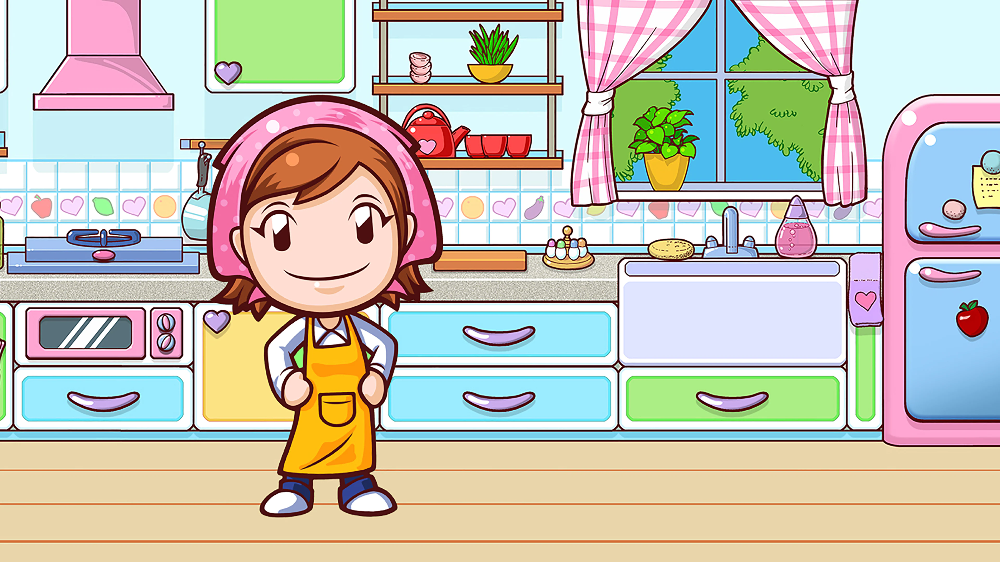

My firsts DS was a gift from Catarina, my best friend. I loved to
play cooking mama with her and my favorite part was decorating
the cake!
Me and Catarina used to create our own cooking competition
where my grandfather was the judge. I won a cooking set as the price.
My grandfather is a very good chef and he teached me how to do
my favorite cake: corn cake, a brazilian special.
When I was 11 I got accepted
to Masterchef kids Brazil! Unfortunately could participate because of my school schedule...
Catarina gave
Catarina gave me the idea to started my own cooking brand: Tipo Doce, where I sold my
decorated cakes.
Explore my kitchen drawers for my cooking story!